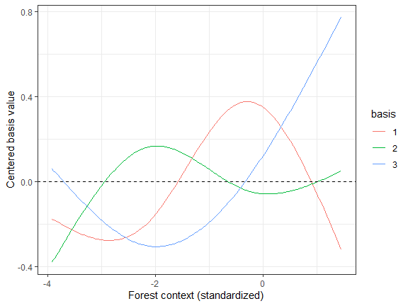
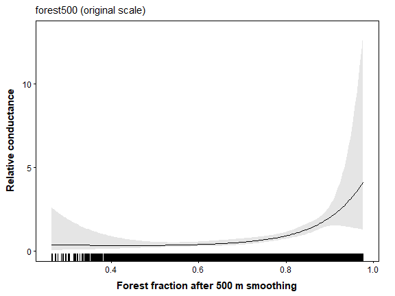
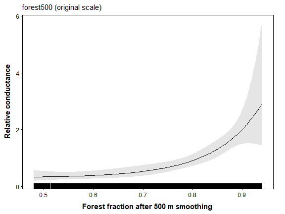
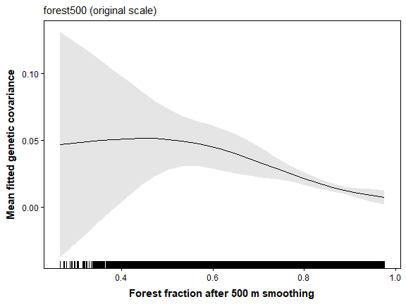
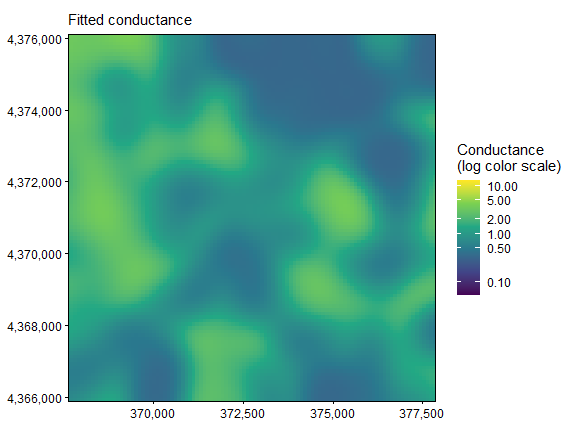
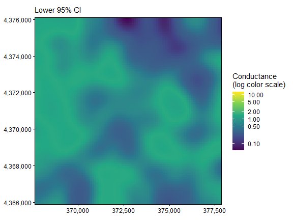
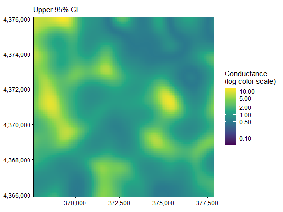

06. Spline Conductance Models
Bill Peterman
Source:vignettes/v06-spline-conductance.Rmd
v06-spline-conductance.RmdThe displayed results and figures in this guide were computed from
the executable R Markdown source shipped with the package. Routine
package checks use these precomputed results to keep the CRAN check time
modest. To rerun every code chunk, copy
system.file("vignette-source", "v06-spline-conductance.Rmd", package = "terradish")
to a writable directory and render that copy with
rmarkdown::render().
Goal. Decide whether a bend in the forest association is useful or just extra flexibility, reading the fitted curve and predictive comparison together.
vignette("v12-data-generation", package = "terradish")
explains the landscapes, SLiM histories, sampling, and matched markers
used in these examples.
Shape and spatial context are different questions
Gaussian smoothing sets the spatial context of a raster covariate. A
spline sets the shape of its association with
conductance. Start with vignette("v01-getting-started", package = "terradish")
and vignette("v07-gaussian-scale-optimization", package = "terradish")
for the shared Ohio pond response and its spatial context.
A forest association can rise steadily, level off, or change direction, and a spline lets the data estimate such a curve. Here you hold context at the simulated 500 m and ask whether a flexible shape improves on a log-linear association. The simulated log-conductance is linear in that context, so a spline should approximate it but need not improve prediction, a check against reading a nonlinear ecological story into a flexible curve.
For a log-linear model, . For a spline,
where are basis functions and is the chosen number of basis coefficients. The coefficients jointly describe one curve, so their individual signs lack the meaning of a single log-linear slope. These are unpenalized regression splines. The fit estimates no smoothing penalty, so you set their complexity explicitly.
Use the same genotypes and fixed context
library(terradish)
library(terra)
library(ggplot2)
data(ohio_ponds)
ponds <- ohio_ponds$ponds
# Sum SNP dosage within ponds, keep ponds in their declared order, and
# build the pond covariance exactly as in Getting Started.
g <- factor(ohio_ponds$samples$pond, levels = ponds$pond)
Y <- rowsum(ohio_ponds$snp, g, reorder = FALSE)
Y <- Y[ponds$pond, , drop = FALSE]
N <- 2 * as.numeric(table(g)) # sampled allele copies per pond
S <- cov_from_biallelic(Y, N) / N[1]
# Standardize every layer over the full landscape, then build the graph.
x <- c(unwrap(ohio_ponds$covariates), unwrap(ohio_ponds$forest500))
surface <- conductance_surface(scale_covariates(x), ponds[c("x", "y")], directions = 8)All cells and all 24 ponds remain in the graph, and forest context is standardized over the whole landscape. Fixing 500 m uses the known simulated scale, which a field study must instead justify or estimate.
The graph carries layers (forest, slope,
elevation) that these formulas do not use. When you run the
fits below, terradish() warns that it removed the unused
layers. That warning is expected here, and this guide does not print
it.
See how basis functions build a curve
grid <- seq(min(surface$x$forest500), max(surface$x$forest500), length.out = 200)
B <- splines::ns(grid, df = 3)
B <- sweep(B, 2, colMeans(B))
basis_data <- data.frame(x = rep(grid, 3), value = as.vector(B),
basis = factor(rep(1:3, each = length(grid))))
ggplot(basis_data, aes(x, value, color = basis)) + geom_line() +
geom_hline(yintercept = 0, linetype = 2) + theme_bw() +
labs(x = "Forest context (standardized)", y = "Centered basis value")
How to read the plot. Each column bends over part of the covariate range, and their weighted sum forms the fitted shape. The fit itself defines and stores its basis (knots, boundary knots, and centering offsets) on the full training raster, not this display grid, and prediction reuses that definition rather than placing new knots.
Natural splines are cubic within the boundary knots and linear beyond
them, while B-splines can behave polynomially outside their boundary
range. Neither makes unsupported extrapolation safe. df
sets the number of conductance coefficients for the smooth term, not an
effective marker count or an automatically selected ecological
complexity.
Fit linear and spline candidates with starting checks
control <- NewtonRaphsonControl(maxit = 200, ctol = 1e-8, ftol = 1e-8)
fit_linear <- terradish(S ~ forest500, surface,
measurement_model = wishart_covariance, nu = 40,
optimizer = "bfgs", control = control)
# Three basis coefficients are estimated jointly. Preserve every start's status.
defaults <- attr(smooth_loglinear_conductance(~ s(forest500, df = 3), surface$x),
"default")
spline_fits <- lapply(c(-0.5, 0, 0.5), function(start) {
theta <- defaults
theta[] <- start
tryCatch(terradish(S ~ s(forest500, df = 3), surface,
conductance_model = smooth_loglinear_conductance,
measurement_model = wishart_covariance, nu = 40, theta = theta,
optimizer = "bfgs", control = control), error = identity)
})
valid <- vapply(spline_fits, function(z) !inherits(z, "error") &&
isTRUE(z$convergence$code == 0) && isTRUE(z$fit$subproblem$convergence == 0), logical(1))
likelihood <- vapply(spline_fits, function(z)
if (inherits(z, "error")) NA_real_ else as.numeric(logLik(z)), numeric(1))
data.frame(start = c(-0.5, 0, 0.5), valid, logLik = likelihood)
#> start valid logLik
#> 1 -0.5 TRUE 143.5772
#> 2 0.0 TRUE 143.5772
#> 3 0.5 TRUE 143.5772
if (!any(valid)) stop("No converged spline candidate")
eligible <- which(valid)
fit_spline <- spline_fits[[eligible[which.max(likelihood[valid])]]]
summary(fit_spline)
#> Conductance surface with 10404 vertices (24 focal) estimated by maximum likelihood
#> Call: terradish(formula = S ~ s(forest500, df = 3), data = surface,
#> conductance_model = smooth_loglinear_conductance, measurement_model = wishart_covariance,
#> nu = 40, theta = theta, optimizer = "bfgs", control = control)
#>
#> Loglikelihood: 143.5772 (5 degrees freedom)
#> AIC: -277.1545
#>
#> Number of function calls: 35
#> Number of optimization steps: 12
#> Convergence: converged | projected gradient: 2.03e-09
#> Norm of gradient at MLE: 2.785586e-09
#>
#> Nuisance parameters (conditional on fitted conductance surface; measurement-model scale):
#> Estimate Std. Error Lower 95% Upper 95%
#> tau 1.3394 0.1533 1.0390 1.6399
#> sigma -3.0634 0.4345 -3.9150 -2.2118
#>
#> Spline shape over focal-site covariate ranges:
#> term variable lower upper monotone direction
#> s(forest500, df = 3) forest500 -2.291263 1.182408 TRUE increasing
#> derivative_sign_changes
#> 0
#> Coefficients:
#> Estimate Std. Error z value Pr(>|z|)
#> s(forest500).1 1.4217 0.4801 2.961 0.003065 **
#> s(forest500).2 1.7429 2.3415 0.744 0.456667
#> s(forest500).3 2.5743 0.7348 3.503 0.000459 ***
#> ---
#> Signif. codes: 0 '***' 0.001 '**' 0.01 '*' 0.05 '.' 0.1 ' ' 1
#>
#> Correlation of Coefficients:
#> s(forest500).1 s(forest500).2
#> s(forest500).2 0.7533075
#> s(forest500).3 0.3623660 0.5814812How to read the output. Require convergence at both levels of fitting, and compare the likelihoods reached from several modest starts. The spline has three conductance coefficients to the linear model’s one, read together as one curve. The measurement parameters keep their usual meaning (see the table).
| Quantity | Where it appears | Interpretation |
|---|---|---|
df = 3 |
Natural-spline basis | Three unpenalized conductance coefficients |
| Weighted basis sum in log-conductance | Joint curve parameters, not individual ecological slopes | |
| 500 m context | Precomputed forest raster | Spatial averaging held fixed for the shape comparison |
tau and measurement sigma
|
Covariance likelihood | Graph weight and log additional diagonal variance |
nu = 40 |
Likelihood and curvature | Effective Wishart information, an assumption held equal across candidates |
Interpret the fitted association and its support
plot(fit_spline, type = "marginal", data = surface) +
labs(x = "Forest fraction after 500 m smoothing",
y = "Relative conductance") +
theme(plot.margin = margin(6, 18, 6, 6))
How to read the curve. Conductance stays low and nearly flat across intermediate forest, then climbs steeply above about 0.8 forest. The log-linear generating model also bends upward on this scale, because conductance is the exponential of a straight line, so a bend alone is not evidence of a threshold. The horizontal axis is back-transformed to forest fraction. The gray band is a 95% interval at each forest value and widens toward the extremes of forest, where few ponds supply information.
focal_values <- surface$x$forest500[as.integer(surface$demes)]
rbind(domain = range(surface$x$forest500), focal = range(focal_values))
#> [,1] [,2]
#> domain -3.921526 1.456879
#> focal -2.291263 1.182408
summary(fit_spline)$spline_monotonicity
#> term variable lower upper monotone direction
#> 1 s(forest500, df = 3) forest500 -2.291263 1.182408 TRUE increasing
#> derivative_sign_changes
#> 1 0How to read these outputs. Values are in SD units of
smoothed forest. Ponds sit between -2.3 and 1.2 SD, while the landscape
spans -3.9 to 1.5 SD, so the curve beyond the pond range rests on paths
through the landscape rather than on sampled ponds. The monotonicity row
reports whether the curve only rises or only falls across the pond range
(monotone, direction) and how often its slope
changes sign. Here it only increases. To keep predictions inside the
sampled range, set support = "focal" in plot()
or conductance(). This clamps the display without refitting
the model.
plot(fit_spline, type = "marginal", data = surface, support = "focal") +
labs(x = "Forest fraction after 500 m smoothing",
y = "Relative conductance") +
theme(plot.margin = margin(6, 18, 6, 6))
View the genetic-response curve
plot(fit_spline, type = "marginal_response", data = surface,
marginal_covariates = "forest500", n = 25) +
labs(x = "Forest fraction after 500 m smoothing",
y = "Mean fitted genetic covariance")
How to read this curve. As in Getting Started, each point sets forest to one value in every cell and averages the fitted covariance among ponds, including each pond’s variance. More forest raises conductance and shrinks the graph’s contribution to covariance, so the average falls as forest rises. With forest as the only predictor, this is the conductance curve above, inverted and rescaled. The band is an approximate interval for that average, not for any pond pair, and its normal approximation can dip below zero where data are sparse.
maps <- plot(fit_spline, type = "surface", data = surface)
C <- conductance(surface, fit_spline)
map_limits <- range(terra::values(C), na.rm = TRUE)
# A shared log color scale reveals gradients without changing the fitted
# conductance values or clipping the confidence bounds.
for (p in maps) {
print(p + scale_fill_viridis_c(
trans = "log10", limits = map_limits,
breaks = c(0.01, 0.1, 0.5, 1, 2, 5, 10, 20),
name = "Conductance\n(log color scale)"
))
}


How to read the maps. The estimate shows where the spline assigns high or low conductance, on a log color scale shared by all three panels. Wide bounds where forest values have few sampled ponds call for caution, even where the estimate looks smooth.
Ask whether flexibility earns its extra parameters
aic_table(list(fit_linear, fit_spline), mod_names = c("linear", "spline_df3"))
#> model K AIC Delta_AIC AIC_wt Cum.wt loglik converged boundary
#> 2 spline_df3 5 -277.1545 0.0000 0.5658 0.5658 143.5772 TRUE FALSE
#> 1 linear 3 -276.6249 0.5296 0.4342 1.0000 141.3124 TRUE FALSE
cv <- terradish_cv_folds(surface,
list(linear = S ~ forest500, spline_df3 = S ~ s(forest500, df = 3)),
folds = ponds$fold, model = wishart_covariance, nu = 40,
conductance_model = list(linear = loglinear_conductance,
spline_df3 = smooth_loglinear_conductance),
nuisance = "fixed", optimizer = "bfgs", keep_fits = "none", control = control)
cv$results[, c("model", "fold", "loglik", "loglik_gain", "error")]
#> model fold loglik loglik_gain error
#> 1 linear 3 63.474314 4.721903
#> 2 linear 1 83.096136 14.187373
#> 3 linear 2 -6.286712 27.031727
#> 4 spline_df3 3 62.531066 3.778655
#> 5 spline_df3 1 83.958923 15.050160
#> 6 spline_df3 2 -36.292265 -2.973826
cv$summary
#> model folds failed n_folds_ok total_loglik common_folds_total
#> 1 linear 3 0 3 140.2837 140.2837
#> 2 spline_df3 3 0 3 110.1977 110.1977
#> n_common_folds between_repeat_sd mean_loglik total_loglik_gain
#> 1 3 NA 46.76125 45.94100
#> 2 3 NA 36.73257 15.85499
#> mean_loglik_gain se_difference mean_difference within_one_se
#> 1 15.313668 0.00000 0.00000 TRUE
#> 2 5.284996 10.00204 -10.02867 FALSEHow to read the comparison. Flexible curves can
raise the full-data likelihood even when the true shape is linear, and
the AIC penalty counts their added coefficients. Spatial validation then
asks whether the association transfers to whole held-out ponds, with
measurement parameters fixed at training values.
terradish_cv_folds() scores only the pairs of ponds within
each held-out block, not pairs that join a training pond to a held-out
pond (see how spatial
cross-validation scores models). A spline that fits better but does
not predict better favors the simpler association for this purpose.
Here the spline’s AIC advantage is less than one unit, which is a
tie. The linear model is the spline’s straight-line special case, so a
likelihood-ratio test also applies. From the two log-likelihoods in the
table, the statistic is 4.53 on 2 degrees of freedom (the two extra
coefficients), or
0.1 from pchisq(), so the full-data fit gives no clear
support for the bend.
In held-out prediction, the spline’s summed score is about 30 units
below the linear model. Block 2 alone supplies about 30 of those units,
and in that block the spline even loses to uniform conductance. In the
other two blocks the two models score within about one unit of each
other. In cv$summary, the spline trails linear by about
10.03 units per block (standard error 10.00). The difference and its
standard error are nearly equal, and the standard error rests on three
blocks, so within_one_se = FALSE is a descriptive flag and
not a decision. One block drives the gap.
Prefer the linear model on parsimony. The spline spends two more coefficients, ties on AIC, gains no clear support from the likelihood-ratio test, and does not predict better overall in the held-out blocks. The curve rises like the simulated association, and the extra flexibility adds nothing a reader can rely on.
What to take to your own study
A mixed formula such as S ~ s(forest500, df = 3) + slope
adds a linear conditional slope association, and smoothing both
variables adds more basis coefficients. A larger df can
represent sharper bends but can also fit noise with only 24 ponds.
Choose a small, scientifically motivated candidate set. If you select
context or spline complexity with genetic data, do so inside training
blocks before claiming predictive performance for the selection
procedure.
Natural splines are the default. Request B-splines in the formula,
for example s(forest500, df = 3, basis = "bs"). Do not read
automatic knot locations as biological breakpoints. Splines use a fixed
spatial context, so to estimate the smoothing scale, use a log-linear
term in the Gaussian scale model instead.
Quick reference: shape at a fixed context
library(terradish)
library(terra)
data(ohio_ponds)
# 0. Pond covariance from SNP dosage, with ponds in their declared order.
g <- factor(ohio_ponds$samples$pond, levels = ohio_ponds$ponds$pond)
Y <- rowsum(ohio_ponds$snp, g, reorder = FALSE)
Y <- Y[ohio_ponds$ponds$pond, , drop = FALSE]
N <- 2 * as.numeric(table(g))
S <- cov_from_biallelic(Y, N) / N[1]
x <- c(unwrap(ohio_ponds$covariates), unwrap(ohio_ponds$forest500))
graph <- conductance_surface(scale_covariates(x), ohio_ponds$ponds[c("x", "y")])
ctl <- NewtonRaphsonControl(maxit = 200, ctol = 1e-8, ftol = 1e-8)
# 1. Spatial context is fixed; the spline estimates response shape.
fit <- terradish(S ~ s(forest500, df = 3), graph,
conductance_model = smooth_loglinear_conductance,
measurement_model = wishart_covariance, nu = 40, optimizer = "bfgs", control = ctl)
summary(fit) # check Convergence; spline shape is reported before Coefficients
# 2. Interpret the whole curve, including its supported range.
plot(fit, type = "marginal", data = graph)
plot(fit, type = "marginal", data = graph, support = "focal")
# 3. Compare prediction with a simpler log-linear shape. Scores use only
# pairs within each held-out block; prefer the simpler shape on a tie.
cv <- terradish_cv_folds(graph,
list(linear = S ~ forest500, spline = S ~ s(forest500, df = 3)),
ohio_ponds$ponds$fold, model = wishart_covariance, nu = 40,
conductance_model = list(linear = loglinear_conductance,
spline = smooth_loglinear_conductance),
nuisance = "fixed", optimizer = "bfgs", control = ctl)
cv$summary # within_one_se is a descriptive tie flag, not a decisionSummary of key functions
| Function | Purpose |
|---|---|
smooth_loglinear_conductance() |
Expand specified smooth terms into a stored spline basis |
terradish() |
Fit basis coefficients and measurement parameters |
summary() |
Read estimates, convergence, and spline support diagnostics |
plot(..., type = "marginal") |
Interpret the combined conductance association |
aic_table() |
Compare compatible fits while counting spline parameters |
terradish_cv_folds() |
Evaluate shape candidates on common held-out ponds |
See also
-
vignette("v01-getting-started", package = "terradish"): genotype construction and fixed-context fitting. -
vignette("v07-gaussian-scale-optimization", package = "terradish"): estimate the spatial context of a continuous raster. -
vignette("v04-model-comparison", package = "terradish"): multivariate candidates, information sensitivity, and predictive selection. -
vignette("v05-categorical-conductance", package = "terradish"): factors for class contrasts rather than smooth gradients. -
vignette("v09-individual-salamanders", package = "terradish"): a hump-shaped (quadratic) resistance response with individual genotypes. -
vignette("v12-data-generation", package = "terradish"): how the pond landscape and genetic history were simulated.